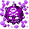
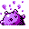

#109
Koffing
Poison
Because it stores several kinds of toxic gases in its body, it is prone to exploding without warning
Base stats Total 295
HP40
Attack65
Defense95
Speed35
Special60
Details
- Species
- Poison Gas
- Height
- 2'00"
- Weight
- 2.0 lb
- Catch rate
- 190
- Base exp
- 114
- Growth
- Medium Fast
Level-up moves
LevelMoveType
StartTackleNormal
StartSmogPoison
Lv 9Poison StingPoison
Lv 11SmokescreenNormal
Lv 16SmogPoison
Lv 20HazeIce
Lv 25AcidPoison
Lv 32SludgePoison
Lv 41SelfdestructNormal
Lv 47ExplosionNormal
Evolution
Where to find
TM / HM
TM06 ToxicTM07 Shadow BallTM08 Body SlamTM09 Take DownTM24 ThunderboltTM25 ThunderTM31 MimicTM32 Double TeamTM34 BideTM36 SelfdestructTM37 FlamethrowerTM38 Fire BlastTM40 Sludge BombTM44 RestTM46 PsywaveTM47 ExplosionTM50 SubstituteHM05 Flash